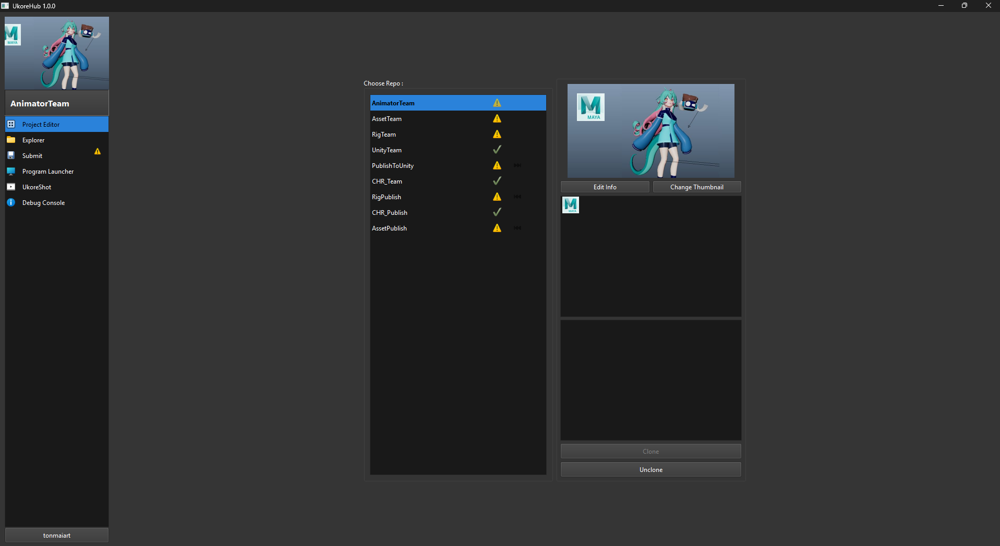

Quick Start¶

Ukore Hub เป็นโปรแกรมศูนย์กลางที่ Artist ทุกคนจะใช้ในการเปิดงาน , แก้ไขงาน และส่งงาน
โดยโปรแกรมสามมารถการเปิดโปรแกรม DCC (Digital Content Creation) ต่างๆ เช่น Autodesk Maya , Blender , Unity Artist ต้องเปิดโปรแกรม DCC ผ่าน Ukore Hub เท่านั้น เพื่อให้สภาพแวดล้อมการทำงานของทุกคนเป็นมาตรฐานเดียวกัน
สิ่งที่ต้องเตรียมก่อนใช้งาน Ukore Hub¶
- สมัครบัญชี Github ด้วย Email ส่วนตัวได้ที่ http://www.github.com/
การติดตั้ง Ukore Hub¶
- Download and Install Git https://github.com/git-for-windows/git/releases/download/v2.55.0.windows.4/Git-2.55.0.4-64-bit.exe
- Download and Install Git LFS : https://github.com/git-lfs/git-lfs/releases/download/v3.7.1/git-lfs-windows-v3.7.1.exe
- Download and Install Python https://www.python.org/ftp/python/pymanager/python-manager-26.3.msix
- Extract .zip and launch Ukore Hub Launcher https://github.com/tonmaiart/UkoreHubLauncher/archive/refs/heads/main.zip
- Login github and choose directory in pc that will be storage for project.
การเลือก Repositories ที่จะทำงาน¶
- กด Choose Repository และเลือก Repository ที่จะทำงาน และทำการรอระบบทำการ Sync File สักพัก สามารถเช็คความคืบหน้าได้ที่ช่อง Submit
- กด Tab Browse… เพื่อเลือกไฟล์ที่จะทำงานได้เลย!
หมายเหตุ : บาง Repositories อาจถูกจำกัดสิทธิ์ให้เข้าถึงได้บาง User เท่านั้น สามารถติดต่อแผนก Pipeline เพื่อสอบถามสิทธิ์เพิ่มเติม การแก้ไขไฟล์และส่งไฟล์ หลังแก้ไขไฟล์เสร็จ แล้วต้องการ Commit ไฟล์ ให้ไปที่ Tab Commit Work เราสามารถเขียน commit text ได้เลย ว่าเราทำการปรับปรุงแก้ไขไฟล์นี้อะไรไปบ้าง กด Commit เพื่อส่งงาน
ข้อควรระวัง¶
- ห้ามแก้ไขงานไฟล์เดียวกัน ควรตกลงกับเพื่อนร่วมทีมให้เรียบร้อยว่าใครจะทำงานไฟล์ไหน
- จากข้อแรก หากต้องส่งต่องานร่วมกัน หรือป้องกันการ Conflict ( การที่ไฟล์นั้นมีคนส่งงานชนกัน ) ให้แก้ด้วยการหมั่น Commit
- งานทุกครั้งหลังแก้ไขงานทันทีเพื่ออัพเดทให้ไฟล์เราเป็นไฟล์ล่าสุดเสมอก่อนมีใครจะหยิบไฟล์เราไปแก้ไขต่อ
คุณสามารถอ่าน Document ฟีเจอร์หลักของ Ukore Hub ได้ที่ :